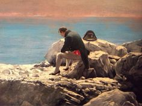

1.Кто автор “Повести о Магомет-Салтане”?
А.Митрополит Макарий
Б.Иван Пересветов
В.Протопоп Сильвестр
2.В этом соборе венчались на царство русские цари, этот собор является главным в России...
А.Успенский собор во Владимире
Б.Собор Василия Блаженного
В.Успенский собор Московского Кремля
3.Какое литературное произведение относится к Новгородской боярской республике?
А.Юрий Долгорукий
Б.Всеволод Большое Гнездо
В.Андрей Боголюбский
4.Какая икона была создана Андреем Рублевым и сейчас находится в Троице-Сергиевой лавре?
А.“Слово о разорении русской земли”
Б.“Задонщина”
В.Былина “Садко”
5.Укажите имя и прозвище самого известного московского юродивого, которого уважал сам Иван Грозный и в честь которого называется главный храм Москвы. Запишите ответ слитно строчными буквами.
Ответ
6.Укажите архитектора Успенского собора Московского Кремля. Запишите ответ слитно строчными буквами.
Ответ
7.Укажите архитектурный тип Архангельского собора Московского Кремля. Запишите ответ строчными буквами, слитно и без слова “тип”.
Ответ
8.Укажите название литературного произведения, посвященного Куликовской битве и написанного в конце XIV века Софонием Рязанцем. Запишите ответ строчными буквами.
Ответ
9.Укажите название первого значительного каменного здания гражданского значения Москвы, созданного Марком Фрязиным и Пьетро Соллари в правление Ивана Великого. Запишите ответ слитно строчными буквами.
Ответ
10. Укажите иконописца, который является автором иконы “Богоматерь Донская”, росписи Церкви Спаса на Ильине улице. Запишите имя и прозвище слитно строчными буквами.
Ответ
Результат
